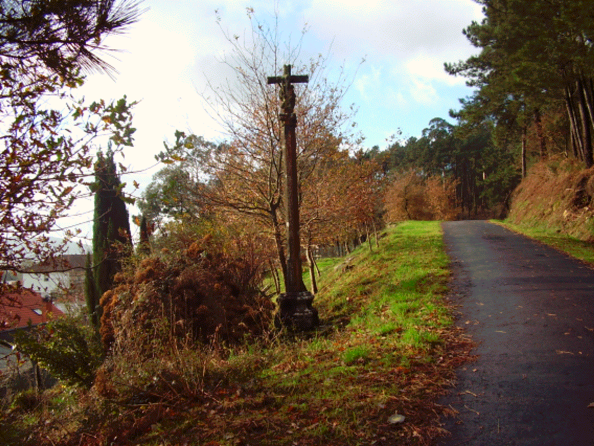

Bexo é o nome dunha das aldeas de San Xoán de Laíño. O Alto de Bexo está na Paradegua, na estrada que vai para Rianxo. Gonzalo Navaza pensa que posiblemente sexa un hidrónimo prerromano coa mesma orixe que Vea (Velegia no latín medieval). Crespo Pozo faino derivar da partí- cula UEX/VEX, ‘auga, río’ e explica, verbo da forma Bejo, que “xa vai sendo hora de que se lle cambie o nome” pola correcta Bexo. A mudanza fixérona chupatintas coma os que trocaron Rianxo por Rianjo. Hai un río de Bexo no Concello de Aranga e Beja dálle nome a un distrito do sur portugués. No seu discurso de ingreso na Real Academia Galega cóntanos Xosé Luís Axeitos que cando descubriu que o Bejo dos indicadores das estradas non era tal, senón Bexo, e que tiña relación cun nome de propietario, Velegio, e non con “ver”, entendeu tamén que a lingua galega era “unha porta aberta á comprensión do mundo”. Cíta o noso topónimo o padre Sarmiento tanto na viaxe de 1745 (Vejo) coma na de 1754 da que transcribimos a cita completa: «Monte de Bexo, debe ser Vexo, de Visus o Viso, pues de hecho se registra de el lo mejor de la ría de Padrón hasta las torres d´Oeste, hasta cerca de Padrón y todas las brañas de Laíño sobre la ría, las cuales son comunes. As Escuras do Bexo, son las encañadas al subir el Bexo o Vexo.» Estaría relacionado por tanto co verbo ver, VIDERE, pero isto é discutido por autores coma J. L. Pensado que prefire tamén unha derivación antroponímica ou Eligio Rivas que supón unha primitiva base preindoeuropea BES/BIS, ‘altura’. No Tumbo Vermello de Lope de Mendoza de 1435 explícase que “en la villa de Beejo, que es en la felegresia de San Juan de Leyn ay catorze fogos, e dan por fueros al arçobispo VI maravedis cada uno. Iten, en estos casares hay lutuosa e gayosa”. A lutuosa pagábaselle ó arcebispo cando morría alguén na casa e a gayosa cando había voda ou bautizo.
Houbera ledicia ou dor, pagaban os de sempre. Nas Memorias del Arzobispado de Santiago de Jerónimo del Hoyo de 1606, falando dos veciños de Sancta María de Isorna explícase que «Son bassallos del arçobispo, mi señor, de la jurisdición de Cordero. Está esta felegresía inclusa en la jurisdición de Rianjo y los vasallos van oir Audiencia y a los alcaldes a la Puente a Balga. Pasan por una barca el río de Padrón y lo mesmo hacen los vezinos de la aldea de bexo que son de la felegresía de San … Giao de Laiño que son quatorce a quinze vasallos.» Comenta aínda o cardeal Del Hoyo que “quedaron desta parte del río para guarda de unos castillos questán en el rio de los quales aún duran tres que corresponden a las torres d’Oeste” e explica que estarían mellor na xurisdición de Rianxo polas moitas dificultades que teñen para cruzar coas grandes riadas do Ulla. No Catastro de Ensenada, faise un interrogatorio á parte para o Couto de Bexo, porque, aínda que pertence á fegresía de San Xián de Laíño, é nese momento da xurisdición de Cordeiro. Na aldea de Bexo está a Capela de San Amaro, A Armida, con dúas esculturas de pedra medievais, unha do San Pedro e outra da Virxe de Belén e unha imaxe de madeira do San Mauro. Ó pé dela vive o profesor Brea Rei que editou a obra completa do poeta de Taragoña Brea Segade, parente seu: Un reiseñor canta lonxe. Natural de Bexo era Rosa Fernández, criada de Rosalía e ama de cría de Gala. Tanto ela coma Ovidio, os xemelgos, queríana moito. Despois Rosa tivo que marchar para Madrid onde tamén traballou de serventa e tivo un mozo co que se prometeu, pero acabou enganándoa, roubándolle os cartos e envelenándoa cuns pasteis. Pouco antes de morrer mandoulle nun baúl as poucas pertenzas que tiña a Rosalía de Castro a Santiago, que as enviou a Bexo á casa dos pais de Rosa. A nosa novela do século XX, e unha das grandes da narrativa contemporánea galega, é a Pensa Nao de Anxo Angueira que remata con Amaro vogando nas insuas de Bexo. A nosa novela do XIX é o drama de Rosa de Bexo e está aínda por escribir.
